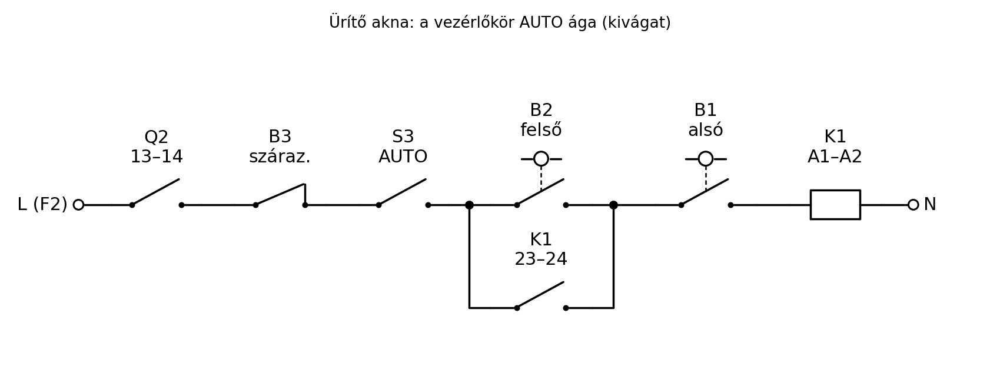
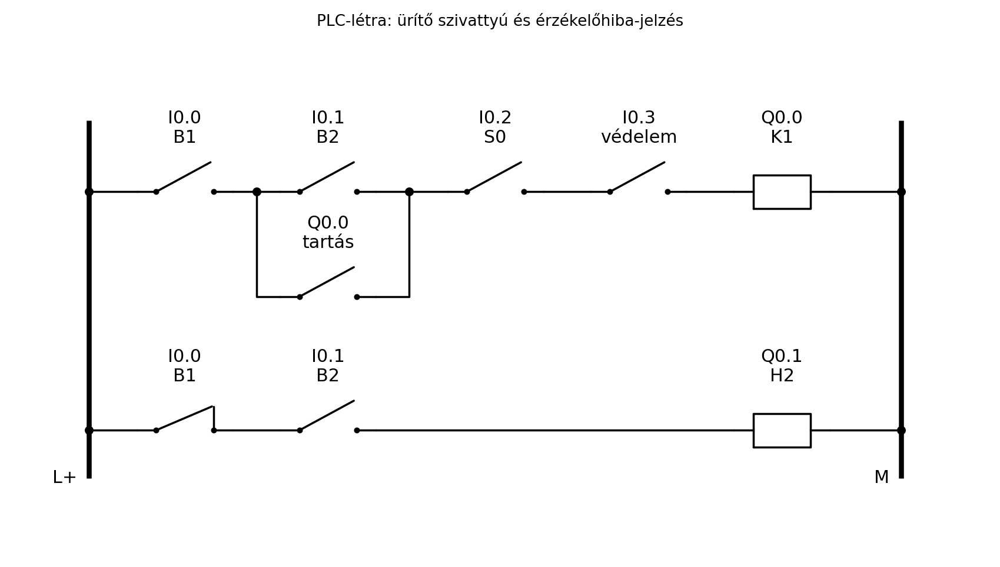
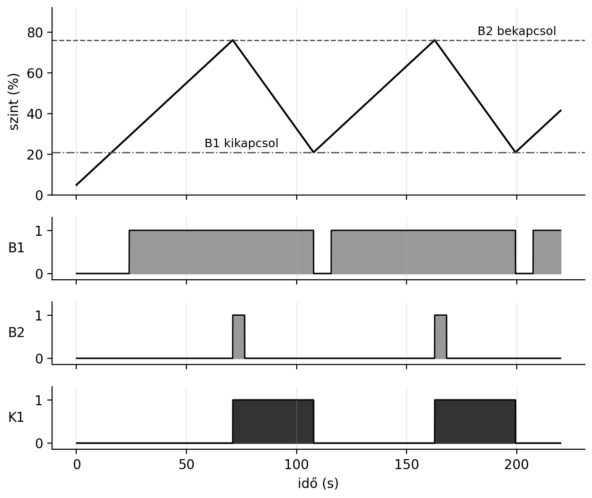
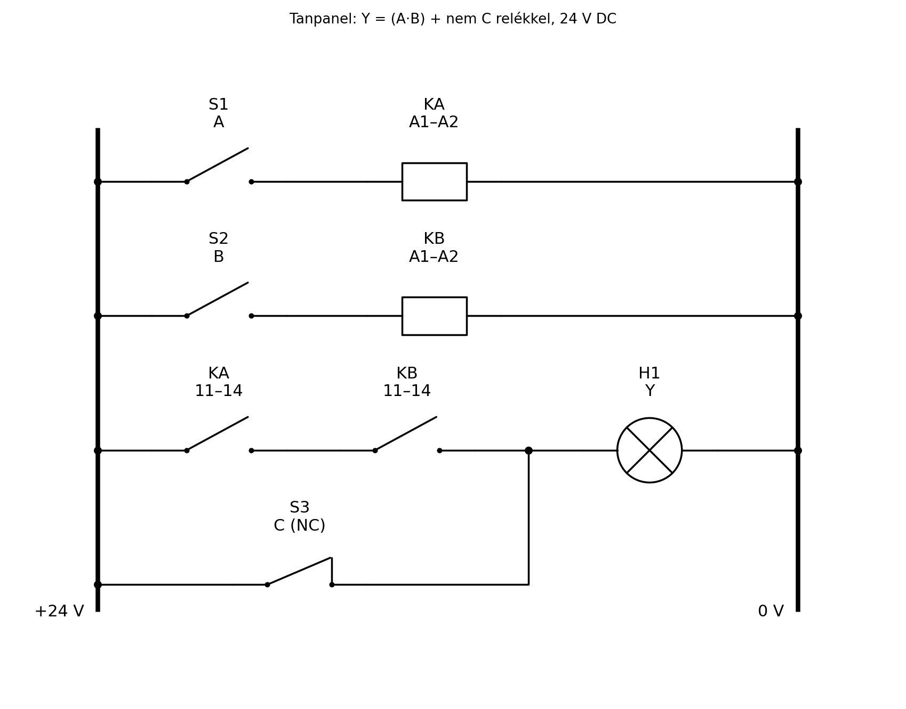

38.3 Logikai kapuk, számrendszerek
és a relé helyett logika
A kapcsolódó elmélet: tankönyv, 38.3 alfejezet.
38.3.1 Esettanulmány: szintvezérlés
két úszókapcsolóval
Feladat. Ürítő (zsomp-) akna szivattyúja induljon,
amikor a víz eléri a felső úszót, és addig járjon, amíg a szint az alsó
úszó alá nem süllyed. A kapcsolás betűjelei a Kétsebességű, sorrendi és
késleltetett vezérlések (tankönyv, 32.4) alfejezet teljes kapcsolási
lapjával (tankönyv, 32.4) egyeznek (ott a tartálytöltés az alaplap, az
aknaürítés a hozzá tartozó feladat); itt a logikai elemzés a feladat.
Jelölés:
,
ha a víz eléri az alsó úszót (az érintkezője ekkor vezet),
,
ha eléri a felsőt.
Állapottábla (a védelmi lánc rendben, nincs leállító
parancs):
B1
B2
K1 (szivattyú)
Magyarázat
0
0
0
a szint az alsó úszó alatt: áll
1
0
az előző állapot
tartás: ugyanarra a bemenetre kétféle kimenet
lehet
1
1
1
a szint elérte a felső úszót: indul
0
1
0, H2 riasztás
lehetetlen állapot: érzékelőhiba
A tartás miatt ez sorrendi logika. A függvény:
Itt
a védelmi lánc rendben állapota (a 32.4-es lapon a Q2 13–14 és a B3
szárazonfutás-védő együtt),
a leállító parancs (a lapon AUTO üzemből az S3 0 állása, PLC-ben STOP
bemenet). Ugyanez SR-tárolóként: a beállító jel
,
a törlő jel
,
és a törlés elsőbbséget élvez (reset-domináns). A két úszó tehát két
kapcsolási küszöböt ad, ugyanazt a hiszterézist, amelyet a
Schmitt-triggernél (tankönyv, 38.2) láttál.
A relés rajz AUTO ága (kivágat a 32.4-es
lapról):

Ürítő akna: a vezérlőkör AUTO ága
(kivágat) - A 32.4-es lap betűjeleivel: Q2 13–14 (motorvédő
segédérintkező), B3 szárazonfutás-védő bontó, S3 AUTO érintkezője, B2
felső úszó záró párhuzamosan a K1 23–24 tartóérintkezővel, sorban a B1
alsó úszó, amely a víz elérésekor zár, majd a K1 tekercs. Üres aknánál
B1 és B2 érintkezője nyitva van.
A teljes lapon a KÉZI ág (S0, S1) és a jelzőlámpák is szerepelnek. Az
érzékelőhiba-jelzés relésen egy B1 bontó és egy B2 záró érintkező soros
ága (úszónként még egy érintkező vagy segédrelé kell hozzá).
PLC-létra ugyanerre. A terepi STOP bontó érintkező,
ezért a bemeneti bit nyugalomban 1, és a programban
záró utasítással olvassuk:

PLC-létra: ürítő szivattyú és
érzékelőhiba-jelzés - I0.0 = B1 alsó úszó, I0.1 = B2 felső úszó, I0.2 =
S0 (a terepen bontó, ezért a programban záró utasítás), I0.3 = védelmi
lánc (Q2 13–14 és B3); Q0.0 = K1 szivattyú, Q0.1 = H2
érzékelőhiba.
Funkcióblokkal ugyanez egy reset-domináns RS blokk: beállító bemenete
I0.0 és I0.1 ÉS-kapcsolata, törlő bemenete az I0.0, I0.2, I0.3
bármelyikének 0 állapota (ellenőrizendő: a PLC-gyártó
blokkdefiníciója és jelölése).

Ürítő akna idődiagramja: a K1 a felső úszónál bekapcsol, az
alsónál kikapcsol
Figyeld meg a diagramon, hogy a B2 jele rögtön megszűnik, a K1 mégis
jár tovább: ezt a tartóérintkező (a tároló) biztosítja. A feszültséget
kapcsoló 230 V-os szivattyúkör szerelése és mérése jogosult
szerelő feladata; tanműhelyben törpefeszültségű modellen
próbáld ki. A gépészeti elosztóbeli beépítést lásd Légtechnikai,
vízgépészeti és hőtechnikai elosztók (tankönyv, 35.2), a PLC-programot
PLC-alapok és ipari vezérlés (tankönyv, 32.6). A fordított (töltő)
változat a 10. feladat.
38.3.2 Gyakorlati útmutató: relés
logika építése és ellenőrzése
Cél. Az
függvény megépítése relékkel, és a kimenet igazolása méréssel mind a
nyolc bemeneti kombinációra (rajz – valóság – mérés).
Eszközök és anyagok. 24 V DC tápegység
áramkorláttal, három kapcsoló (S1 = A, S2 = B, S3 = C; az S3-nak bontó
érintkezője legyen), két segédrelé váltóérintkezővel (KA, KB; 11 közös,
12 bontó, 14 záró), 24 V-os jelzőlámpa (H1), sorkapcsok, vezeték,
érvéghüvely, multiméter.
Biztonsági korlát. Csak törpefeszültségű (24 V DC,
leválasztó biztonsági tápról táplált) tanpanelen; a tápegység hálózati
oldalát nem bontjuk meg.
Az öt biztonsági szabály a tanpanelen (minden átkötés
előtt): 1. a tápegység kikapcsolása és leválasztása; 2.
visszakapcsolás elleni biztosítás (a dugó a szerelőnél, tábla); 3. a
feszültségmentesség ellenőrzése multiméterrel a +24 V és 0 V sínen
(előtte a műszert ismert forráson kipróbálva); 4. földelés és rövidre
zárás törpefeszültségen általában nem szükséges, de ezt ellenőrizni és
dönteni kell; 5. a szomszédos feszültség alatti részek (más panel,
hálózati kapocs) lefedése.

Tanpanel: Y = (A·B) + nem C relékkel, 24
V DC - S1 (A) és S2 (B) kapcsoló a KA és KB segédrelé tekercsét
működteti. A H1 lámpa árama a KA 11–14 és KB 11–14 záró érintkezők soros
ágán vagy az S3 (C) bontó érintkezőjén át folyik.
Lépések:
Írd fel a nyolcsoros igazságtáblát:
csak az ABC = 001, 011 és 101 sorban.
Rajzold meg a létrafokot: A és B záró sorosan, ezzel párhuzamosan C
bontó, utána H1.
Készíts huzalozási tervet sorkapocs-számozással, és minden vezetéket
jelölj.
Kösd be a panelt feszültségmentesen.
Folytonosság-ellenőrzés feszültségmentesen: S3 nyugalomban a +24 V
sín és a H1 között folytonos; S3 működtetve szakadt; a relék kézi
működtetésével (ha van nyomója) a KA–KB soros ág is folytonos.
Bekapcsolás után járd végig mind a nyolc kombinációt; írd fel H1
állapotát és a H1 kapcsain mért feszültséget (kb. 24 V vagy 0 V).
Eltérésnél keress hibát a Vezérlések hibakeresése (tankönyv, 32.5)
tünet–ok–mérés módszerével, feszültségmentes átkötéssel javíts, és
ismételd meg mind a nyolc sort.
Ellenőrzési pontok. A relé a kapcsolójával együtt
kattan; H1 pontosan a táblázat 1-es soraiban világít; a mért értékek 24
V vagy 0 V közelében vannak.
Tipikus hibák. A relé 12-es (bontó) és 14-es (záró)
kapcsának felcserélése; a C bontó érintkezője helyett záró bekötése
(ekkor
valósul meg); a tekercs és az érintkező összekeverése a huzalozási
tervben.
Dokumentálás. Kitöltött, nyolcsoros jegyzőkönyv
(várt és mért érték, eltérés, javítás); mintája a Megoldások végén.
38.3.3 Önellenőrzés
Igaz-e: A VAGY kapu relés megvalósítása soros kapcsolás?
Hány bitet jelent egy hexadecimális számjegy?
Mennyi
?
Mennyi az XOR kimenete, ha A=1, B=1?
Mi a veszélye az S=1, R=1 állapotnak SR flip-flopnál?
Rajzold át FBD-be (téglalapos kapujelekkel):
!
38.3.4 Feladatok
(A) Írd fel a 100-es számot kettes és 16-os
számrendszerben!
(A) Rajzold le a
függvény relés kapcsolását!
(B) Mennyi
értéke 10-es számrendszerben?
(B) Írd fel a NAND kapu igazságtábláját!
(C) Egy motor akkor járjon, ha a vészleállító (A)
ki van húzva, ÉS vagy a szintkapcsoló (B) jelez, vagy a karbantartói
kapcsoló (C) be van kapcsolva. Add meg a logikai függvényt!
(D) Egy relés kapcsolás nem működik. Rajzod alapján
a start gomb (S) és az önfenntartó kontaktus (K1) párhuzamosan van
kötve. A stop gomb sorosan. Mi a lehetséges hiba, és hogyan
ellenőrzöd?
(B) Rajzold meg egy TON időzítő kimenetét (PT = 5
s), ha az IN bemenet egymás után 2 s, 6 s és 4 s hosszú impulzust kap
(köztük 2 s szünettel)!
(C) Melyik időzítőfunkció kell ahhoz, hogy egy
fürdőszobai elszívó ventilátor a világítás lekapcsolása után még 3
percig járjon? Mi a PT értéke?
(C) Egyszerűsítsd:
,
és rajzold meg az egyszerűsített relés kapcsolást!
(C) Tartálytöltés két úszóval: a szivattyú az alsó
szintnél induljon, a felső szintnél álljon le
(,
jelentése az esettanulmány szerint). Írd fel K1 függvényét!
38.3.4.1 Feladatbank: logika a
vezérlésben
A betűjelek: S0, S01 = STOP (bontó), S1, S11, S2 = START (záró),
F1–F3 = hőkioldó. A képletben
a megnyomott gombot jelenti.
(A) Két helyről indítás és leállítás: írd fel K1
függvényét önfenntartással (S0, S01, S1, S11)!
(A) Váltókapcsolás: egy lámpát két kapcsolóval (A,
B) kapcsolunk. Melyik logikai függvény?
(B) Írd fel az irányváltás K1 és K2 függvényét
villamos reteszeléssel (S1 előre, S2 hátra, S0 STOP)!
(B) Egy szellőző csak zárt ajtónál
()
és ép hőkioldónál (F1 95–96 zárt,
)
járhat, S0–S1 önfenntartással. Függvény?
(B) Gyűjtőhiba-lámpa: H1 világítson, ha a három
hőkioldó (F1, F2, F3) bármelyike kioldott. Függvény és relés
megvalósítás?
(B) Melyik kapu:
?
Igazold igazságtáblával!
(C) Egy rajzon A–B sorosan, ezzel párhuzamosan
A–
sorosan. Egyszerűsíts! Mit jelent ez hibakeresésnél, ha az egyik B
érintkező szakadt?
(C) Rajzold meg az
létráját, és töltsd ki a nyolcsoros igazságtáblát!
(C) Impulzusrelés (léptetőrelés) világítás több
nyomógombbal: minden nyomásra a lámpa állapota megfordul. Írd fel az új
állapotot, és indokold, miért sorrendi és nem kombinációs a logika!
(D) PLC-programban a terepi STOP gomb (bontó,
nyugalomban a bit 1) bontó (‑|/|‑) utasítással szerepel. Mi a
viselkedés, és mi a javítás?
(D)
;
a PLC bemeneti LED-jei szerint
,
,
,
a kimenet LED-je mégsem ég. Sorold fel a lehetséges okokat és az
ellenőrzés sorrendjét!
(A) A HMI a bemeneti bájtot 0x05-nek mutatja. Írd
fel binárisan! Mely bemenetek aktívak?
38.3.5 Megoldások
Önellenőrzés – válaszok: 1. Hamis, a VAGY
párhuzamos. 2. 4 bitet. 3.
.
4. 0. 5. Az elméleti SR tárolónál tiltott állapot (határozatlan
kimenet); a relés önfenntartásnál a sorosan kötött STOP miatt
törlés-domináns, vagyis a STOP elsőbbsége biztosított – a biztonságos
kialakítás. 6. Egy & blokk A és B bemenettel; a kimenete egy ≥1
blokk egyik bemenetére megy, a ≥1 blokk másik bemenete a C, a
bemeneténél negáló körrel (vagy egy külön 1-es blokk kimeneti negáló
körrel); a ≥1 blokk kimenete Y. Létrában ugyanez: A és B záró sorosan,
ezzel párhuzamosan C bontó.
.
A vészleállító minden ágban sorosan marad; a karbantartói kapcsoló csak
a szintfeltételt helyettesítheti, a vészleállítót soha (ellenőrizendő:
MSZ EN 60204-1). Tipikus hiba az
alak: ebben
esetén a motor a lenyomott vészleállító ellenére jár, vagyis a
vészleállítót kiiktatja.
A leírás alapján a kapcsolás elvileg helyes (START ∥ K1 záró
érintkező, sorosan a STOP bontó gomb). Az ellenőrzést az öt biztonsági
szabállyal kezdjük: lekapcsolás, visszakapcsolás elleni biztosítás,
feszültségmentesség ellenőrzése kétpólusú vizsgálóval, szükség esetén
földelés és rövidre zárás, szomszédos részek lefedése. Ezután
feszültségmentes állapotban, ohmmérővel ellenőrizzük a gombokat: a START
kapcsai (13-14) nyugalomban szakadást, lenyomva zárást mutassanak. Ha a
START helyére bontó (NC) érintkezőt kötöttek, a K1 a
bekapcsoláskor magától behúz (váratlan indulás), és a STOP elengedése
után azonnal újraindul, vagyis a motor tartósan nem állítható le; ez
veszélyes hiba. Egyéb okok: kioldott hőkioldó (F1 95-96 szakadt), az
önfenntartáshoz tévesen a K1 bontó érintkezőjét (21-22) kötötték be
(ekkor a kontaktor bekapcsoláskor START nélkül is behúz, majd azonnal
elenged és újra behúz: kerepel, a motor szaggatottan, váratlanul indul –
ez veszélyes, azonnal le kell kapcsolni; csak nyomva tartott STARTnál
marad tartósan behúzva), vagy szakadt a K1 tekercs (A1-A2 között
szakadás vagy a gyártói értéktől eltérő ellenállás). Nyomógomb
vizsgálatához lakatfogó nem alkalmas: áram nélkül nem mutat
semmit.
A TON kimenete csak akkor lesz 1, ha az IN legalább PT = 5 s
ideig folyamatosan 1. A 2 s-os és a 4 s-os impulzus rövidebb ennél,
ezért ezekre a kimenet 0 marad (a következő impulzus újraindítja az
időmérést). A 6 s-os impulzus 5 s után kapcsolja a kimenetet, és az
impulzus végéig, azaz 1 s-ig 1 – a kimenet a bemenet
megszűnésekor azonnal 0.
Kikapcsolás-késleltetés: TOF (relés megfelelője
az elengedéskésleltetett időrelé), PT = 3 min = 180 s; az IN a világítás
jele, a Q a ventilátor. Bekapcsoláskor a ventilátor azonnal indul,
lekapcsolás után még 3 percig jár.
.
Rajz: A és B záró érintkező párhuzamosan, sorban az Y tekerccsel (az
eredeti hat érintkező helyett kettő).
A szivattyú akkor indul, ha a víz az alsó úszó alatt van
(),
addig jár, amíg a felsőt el nem éri:
(a védelmi láncot és a STOP-ot sorosan hozzáadva).
Feladatbank – megoldások:
:
a STOP bontók sorosan, a START záró érintkezők és a K1 13–14
párhuzamosan (lásd Direktindítás, önfenntartás és kezelőszervek
(tankönyv, 32.1)).
(kizáró VAGY), a váltóérintkezők bekötésétől függően az ellentettje
(XNOR) (lásd Világítási áramkörök: egypólusú, soros, váltó és kereszt
(tankönyv, 16.2)).
,
.
A
a K2 21–22 bontója a K1 ágában, és fordítva (lásd Reverzáló kapcsolás és
reteszelés (tankönyv, 32.2)); a hőkioldót mindkét ágban sorosan kell
figyelembe venni.
:
az ajtókapcsoló, a hőkioldó 95–96 és a STOP sorosan, a START és a
tartóérintkező párhuzamosan.
,
ahol
a kioldott állapot: a három 97–98 záró érintkező párhuzamosan.
XOR: az AB = 00, 01, 10, 11 sorokban
.
.
A B érintkező logikailag felesleges. Hibakeresésnél csalóka: ha az egyik
B érintkező szakadt, a hiba csak B egyik állásában jelentkezik (a másik
ág akkor nyitva van), a másikban nincs tünet – ezért a vizsgálatot B
mindkét állásában el kell végezni (lásd Vezérlések hibakeresése
(tankönyv, 32.5)). Ha a rajzot egyszerűsítik, ez a rejtett hibaforrás
eltűnik (biztonsági láncban viszont a redundancia szándékos).
Létra: A és B záró párhuzamosan, sorban C bontó, majd Y. Az
sorok (ABC): 010, 100, 110; a 000, 001, 011, 101, 111 sorban 0.
,
ahol
a nyomás felfutó éle (egyébként 0). Ugyanarra a
gombállapotra a kimenet lehet 0 vagy 1, az előzménytől függően, ezért
memória (sorrendi logika) kell (lásd Lépcsőházi automata, impulzusrelé
és időrelé alapkapcsolása (tankönyv, 16.3)).
A rung csak akkor vezet, ha a bit 0, vagyis ha a STOP meg van nyomva
(vagy a vezeték szakadt): a motor csak a STOP nyomva tartása alatt
indítható, illetve jár. Javítás: záró (‑| |‑)
programutasítás; utána próba, a STOP-kör szakadásának
ellenőrzésével.
Lehetséges okok: a CPU STOP módban van vagy a kimenetek le vannak
tiltva; a program eltér a rajztól (pl. a B bemenet negálva szerepel,
további feltétel van a rungban, a C-t és a kimenetet más cím kezeli);
erőltetett (force) érték. Sorrend: CPU-állapot és hibajelzés, majd
online nézet (melyik érintkezőnél szakad meg a rung), a bemeneti
állapotbitek, a force-tábla, végül – ha a program szerint a kimenet 1,
de a LED nem ég – a kimeneti modul (ellenőrizendő: a PLC
kézikönyve).
:
a 0. és a 2. bit 1, tehát a 0. és a 2. bemenet aktív.
A gyakorlati útmutató jegyzőkönyv-mintája
(példaadat; a mért feszültséget a saját panelen kell kitölteni):
A B C
Várt Y
H1
(V)
Megfelel
0 0 0
1
világít
23,9
igen
0 0 1
0
sötét
0,0
igen
0 1 0
1
világít
23,9
igen
0 1 1
0
sötét
0,0
igen
1 0 0
1
világít
23,9
igen
1 0 1
0
sötét
0,0
igen
1 1 0
1
világít
23,8
igen
1 1 1
1
világít
23,8
igen
38.3.6 Bináris és hexadecimális
számrendszerek – példák és gyakorlók
Példa. Alakítsuk át a 202-t binárisra:
A maradékokat alulról felfelé olvasva:
.
Példa.
.
Csoportosítás: 1010 és 1101. 1010
= A, 1101 = D. Tehát
.
Ellenőrzés 10-esben:
,
,
összesen
.
38.3.7 Logikai kapuk és
igazságtáblák – példák és gyakorlók
Példa az ÉS működésére.
= vészleállító rendben (0 = lenyomva, 1 = kihúzva),
= szint van (1 = van). A motornak (Y) akkor szabad járnia, ha mindkettő
1.
.
Példa. Egyszerűsítsd:
.
A relés rajzon az öt érintkező (A, B, A,
,
C) helyett három elég: A sorban a párhuzamos B–C csoporttal. Ellenőrzés
igazságtáblával:
A B C
Eredeti
0 0 0
0
0
0
0
0 0 1
0
0
0
0
0 1 0
0
0
0
0
0 1 1
0
0
0
0
1 0 0
0
0
0
0
1 0 1
0
1
1
1
1 1 0
1
0
1
1
1 1 1
1
0
1
1
38.3.8 A relés kapcsolás és a
logikai kapu megfelelősége – példák és gyakorlók
Gyakorló generátor. Egy tetszőleges létrafokból
felírni a függvényt és az igazságtáblát – és fordítva – csak sok
gyakorlással megy. Az alábbi generátor minden feladatnál egyszerre
mutatja a Boole-alakot, a relés létrafokot és a kapurajzot, négy
szinten: (A) egy kapu két bemenettel; (B) három bemenet, két művelet;
(C) fordított feladat: adott igazságtáblához a négy felkínált létrafok
közül kell kiválasztani a helyeset; (D) önfenntartó kör (S1 START, S0
STOP, K1 13–14) egy lépéssorral – K1 állapotát kell megadni
lépésenként.
Statikus változat (mint a PDF-ben)
Mintafeladat a logikai generátorból: Y = (A + B)·C̄
igazságtáblája, létrafoka és kapurajza
A HTML-kiadásban az „Ellenőrzés” soronként értékel (a hibás cella
mellett megjelenik a magyarázat), és felismeri a tipikus hibákat: a
soros és a párhuzamos ág (ÉS ↔︎ VAGY) felcserélését, a bontó (NC)
érintkező elfelejtését, a KIZÁRÓ VAGY összetévesztését a VAGY-gyal,
illetve a D szinten a beállítás-domináns tárolót és az önfenntartás
elhagyását. A nyomtatott kiadás rögzített feladatsora:
Rögzített feladatsor. A HTML-kiadás gyakorlója
végtelen sok hasonló feladatot ad, és a létrafokot és a kapurajzot is
megmutatja; az alábbi hat feladat rögzített. Rajzold meg mindegyikhez a
létrafokot is, és a megoldásban ellenőrizd a soronkénti értékeket.
(A) Töltsd ki az igazságtáblát: Y = ¬(A·B) (a
létrafok és a kapurajz a feladat alatt). Minden sorhoz add meg Y
értékét!
(A) Töltsd ki az igazságtáblát: Y = A·B̅ + A̅·B (a
létrafok és a kapurajz a feladat alatt). Minden sorhoz add meg Y
értékét!
(B) Töltsd ki az igazságtáblát: Y = (A + B)·C̅ (a
létrafok és a kapurajz a feladat alatt). Minden sorhoz add meg Y
értékét!
(B) Töltsd ki az igazságtáblát: Y = A·B + C (a
létrafok és a kapurajz a feladat alatt). Minden sorhoz add meg Y
értékét!
(C) Egy négybemenetű (A, B, C, D) vezérlés kimenete
pontosan ezekben a sorokban 1 (ABCD): 0010, 0110, 1010, 1100, 1101,
1110, 1111; a többi sorban 0. Melyik létrafok valósítja meg? (A
létrafokok Boole-alakja – soros = ·, párhuzamos = +, bontó = felülvonás:
1. Y = A·B + C·D; 2. Y = A·B·C·D̅; 3. Y = (A + B)·(C + D̅); 4. Y = A·B +
C·D̅.)
(D) Önfenntartó kör: S1 START (záró), S0 STOP
(bontó), K1 13–14 tartóérintkező; kezdetben K1 elengedett. A gombok
állapota lépésenként (S1, S0; 1 = megnyomva): (1, 0) → (0, 0) → (0, 1) →
(1, 0) → (1, 1) → (0, 0). Add meg K1 állapotát minden lépés után!
Megoldókulcs.
A rögzített feladatsor megoldókulcsa
Feladat
Szint
Eredmény
1.
A
AB = 00 = 1; AB = 01 = 1; AB = 10 = 1; AB = 11 = 0
2.
A
AB = 00 = 0; AB = 01 = 1; AB = 10 = 1; AB = 11 = 0
Boole-alak: Y = ¬(A·B).
Létrafok: a szorzás (·) soros, az összeadás (+) párhuzamos ág, a
felülvonás bontó (NC) érintkező.
Soronként behelyettesítve: Y = 1 a(z) 00, 01, 10 sor(ok)ban, a többi
sorban 0.
Boole-alak: Y = A·B̅ + A̅·B.
Létrafok: a szorzás (·) soros, az összeadás (+) párhuzamos ág, a
felülvonás bontó (NC) érintkező.
Soronként behelyettesítve: Y = 1 a(z) 01, 10 sor(ok)ban, a többi sorban
0.
Boole-alak: Y = (A + B)·C̅.
Létrafok: a szorzás (·) soros, az összeadás (+) párhuzamos ág, a
felülvonás bontó (NC) érintkező.
Soronként behelyettesítve: Y = 1 a(z) 010, 100, 110 sor(ok)ban, a többi
sorban 0.
Boole-alak: Y = A·B + C.
Létrafok: a szorzás (·) soros, az összeadás (+) párhuzamos ág, a
felülvonás bontó (NC) érintkező.
Soronként behelyettesítve: Y = 1 a(z) 001, 011, 101, 110, 111
sor(ok)ban, a többi sorban 0.